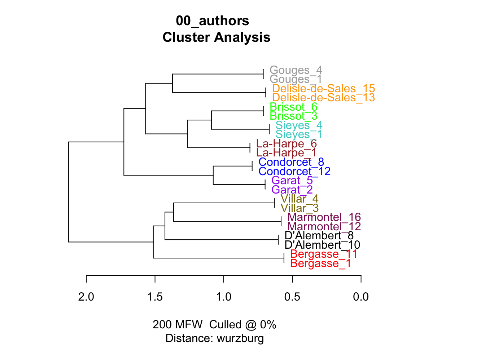
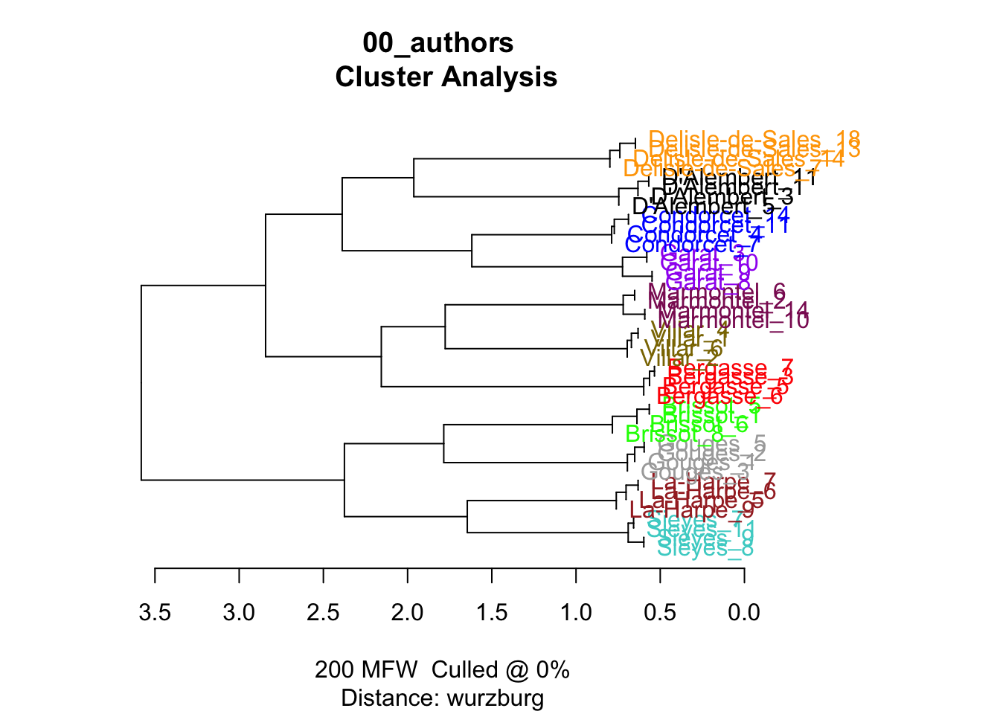

library(tidyverse)
library(tidytext)
library(stylo)
library(seetrees)00_authors
Check authors’ inner clusterisation
load data
fh <- list.files("corpus_authors/", full.names = T)
corpus <- tibble(
path = fh,
text = sapply(path, read_file),
author = str_remove_all(path, "corpus_authors//|\\.txt")
)
glimpse(corpus)Rows: 11
Columns: 3
$ path <chr> "corpus_authors//Bergasse.txt", "corpus_authors//Brissot.txt", …
$ text <chr> "pauvres ils apprendra pas les au enseignement ment action pui …
$ author <chr> "Bergasse", "Brissot", "Condorcet", "D'Alembert", "Delisle-de-S… [1] "Bergasse" "Brissot" "Condorcet" "D'Alembert"
[5] "Delisle-de-Sales" "Garat" "Gouges" "La-Harpe"
[9] "Marmontel" "Sieyes" "Villar" create samples
N tokens for each author:
Warning: Outer names are only allowed for unnamed scalar atomic inputs# A tibble: 11 × 2
author n
<chr> <int>
1 Delisle-de-Sales 45000
2 D'Alembert 39512
3 Marmontel 37610
4 Condorcet 29779
5 Garat 25168
6 Sieyes 24810
7 Bergasse 24034
8 La-Harpe 22623
9 Brissot 19745
10 Villar 12400
11 Gouges 11423corpus_authors_t <- corpus %>%
unnest_tokens(input = text, output = word, token = "words") %>%
group_by(author) %>%
# reshuffle words inside each author
do(sample_n(., size = nrow(.))) %>%
mutate(sample = ceiling(row_number()/sample_size)) %>%
unite(sample_id, c(author, sample), remove = F) %>%
filter(sample != max(sample)) %>%
ungroup() %>%
select(sample_id, author, word, sample)Warning: Outer names are only allowed for unnamed scalar atomic inputs# A tibble: 6 × 4
sample_id author word sample
<chr> <chr> <chr> <dbl>
1 Bergasse_1 Bergasse perfoao 1
2 Bergasse_1 Bergasse pour 1
3 Bergasse_1 Bergasse ce 1
4 Bergasse_1 Bergasse lui 1
5 Bergasse_1 Bergasse trinfporte 1
6 Bergasse_1 Bergasse chacun 1sampling
function
sample_indipendent <- function(corpus_tokenised, n_samples, sample_size,
text_var = "word",
folder = "corpus_samples_dump/",
overwrite = T) {
dir.create(folder)
if(overwrite) {
do.call(file.remove, list(list.files("corpus_samples_dump/", full.names = TRUE)))
}
seed_samples <- corpus_tokenised %>%
select(sample_id, author) %>%
distinct() %>%
group_by(author) %>%
sample_n(n_samples) %>%
pull(sample_id)
# create table with 1 row = 1 sample
true_samples <- corpus_tokenised %>%
filter(sample_id %in% seed_samples) %>%
group_by(sample_id) %>%
summarise(text = paste(!!sym(text_var), collapse = " "))
for (i in 1:nrow(true_samples)) {
write_file(file = paste0(folder, true_samples$sample_id[i], ".txt"),
true_samples$text[i])
}
}sampling
2 samples test
Warning in dir.create(folder): 'corpus_samples_dump' already existstest_samples_2 <- stylo(
gui = F,
corpus.dir = "corpus_samples_dump/",
corpus.lang = "Other",
distance.measure = "wurzburg",
mfw.min = 200,
mfw.max = 200
)using current directory...Performing no sampling (using entire text as sample)slicing input text into tokens...
turning words into features, e.g. char n-grams (if applicable)...Total nr. of samples in the corpus: 22The corpus consists of 44045 tokensprocessing 22 text samples..
combining frequencies into a table...
culling @ 0 available features (words) 5000
Calculating z-scores...
MFW used:
200
Processing metadata...
Assigning plot colors according to file names...

------------------------------------------------
features (e.g. frequent words) actually analyzed
------------------------------------------------
[1] de la les le il que
[7] des qui en qu un est
[13] dans et ne ce on plus
[19] pour une du par pas je
[25] sur au se mais nous si
[31] cette ces lui vous ses son
[37] sa leur sont ils même tout
[43] ou elle être tous comme avec
[49] ont sans aux peut point dont
[55] faire leurs bien fait où me
[61] encore homme hommes étoit deux avoir
[67] autre moins dit toutes toujours ai
[73] cet doit peuple avoit ceux nature
[79] donc faut autres quand nation grand
[85] nos temps été mon peu loi
[91] ma droit jamais parce soit tant
[97] toute entre ni fois celle celui
[103] liberté seroit dire ii moi pouvoir
[109] rien roi trop après esprit alors
[115] quelques france société car frédéric non
[121] notre enfin fut vie cependant elles
[127] là mesmer force ordre vos votre
[133] contre eu eux jour nombre peuples
[139] ainsi depuis donner ici public seul
[145] accord doute état étoient mes monde
[151] aussi mêmes publique rendre sera intérêt
[157] premier raison ré voir citoyens loin
[163] lois manière vérité yeux autant nom
[169] prince principes sous amour avons droits
[175] grande sol corps dé doivent effet
[181] moment vers devoir mieux objet opinion
[187] sens très avoient françois grands laquelle
[193] ouvrage quel tiers trois voix dieu
[199] etat lettres
(total number of elements: 200)4 samples test
Warning in dir.create(folder): 'corpus_samples_dump' already existsn_samples = 4
length(unique(corpus_authors_t$author))*4 == (length(list.files(path = "corpus_samples_dump/")))[1] TRUEtest_samples_4 <- stylo(
gui = F,
corpus.dir = "corpus_samples_dump/",
corpus.lang = "Other",
distance.measure = "wurzburg",
mfw.min = 200,
mfw.max = 200
)using current directory...Performing no sampling (using entire text as sample)slicing input text into tokens...
turning words into features, e.g. char n-grams (if applicable)...Total nr. of samples in the corpus: 44The corpus consists of 88090 tokensprocessing 44 text samples....
combining frequencies into a table...
culling @ 0 available features (words) 5000
Calculating z-scores...
MFW used:
200
Processing metadata...
Assigning plot colors according to file names...

------------------------------------------------
features (e.g. frequent words) actually analyzed
------------------------------------------------
[1] de la les le que il
[7] des en qui qu un est
[13] dans ne et une plus on
[19] pour ce du par pas se
[25] je nous au sur cette mais
[31] si vous lui ces son ses
[37] sa leur ils même être elle
[43] tout avec sont ou aux ont
[49] tous comme sans peut dont bien
[55] faire fait hommes leurs où encore
[61] étoit point me homme avoir toutes
[67] doit deux avoit été ceux donc
[73] peuple autre moins temps ai toujours
[79] nos cet nature dit faut mon
[85] celui toute grand jamais autres soit
[91] sous elles roi peu esprit rien
[97] celle ni contre ma liberté quand
[103] après ii moi principes non votre
[109] fut loi parce société dire entre
[115] nation notre seroit gloire quelques sera
[121] peuvent frédéric alors trop car vie
[127] ainsi aussi fois ici jour droit
[133] intérêt eux là mes enfin pouvoir
[139] droits nom quelque sol très france
[145] françois eu mesmer depuis partie peuples
[151] tant voir amour public beaucoup cependant
[157] force mêmes moment vos citoyens donner
[163] doute grande lois objet premier publique
[169] seul terre étoient nombre vérité vers
[175] grands pourquoi corps pu raison ré
[181] veut chaque digitized état mille effet
[187] vertus chez doivent gens opinion quel
[193] voit auroit autant eût mieux moyen
[199] quelle tiers
(total number of elements: 200)